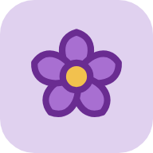
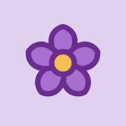
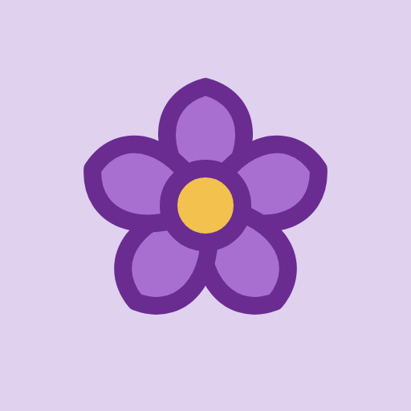

标签页 / 书签 / 桌面快捷方式 / iOS / Android

180
512图标本身不透明，放到深色底上会显出一块浅色方片，这是正常的。要看的是花瓣和描边分不分得开。
系统会自己套圆角或圆形，所以要看的是裁完还剩多少花。
安卓的圆角方形和圆形读的都是 manifest 里 purpose: "maskable" 那张，所以两个框里的花一样大。如果没声明 maskable，系统会拿普通图标往自适应框里塞，花会缩小并垫一圈底色。
装成应用后，任务栏取 192 或 512 那张缩到 24px 显示；窗口标题栏底色是 manifest 的 theme_color（#E0D1EF），左边那颗小图标取 32 那张。
底色 #F2ECF8
点开应用那一瞬间显示的画面：底色取 manifest 的 background_color，中间那张来自 512 图标。
所以背景色如果和图标底色差太远，这一下会闪；本页这张是按真实值铺的，看着不突兀就对了。
| 文件 | 尺寸 | 用途 |
|---|---|---|
| 上一级目录（站点根） | ||
index.html | — | 主页面，按下方写法引用本目录图标 |
manifest.webmanifest | — | PWA 声明，图标指向本目录 |
本目录 icons/ | ||
icon.svg | 矢量 | 标签页、书签、Safari 固定标签页的源图 |
icon-maskable.svg | 矢量 | 上面那份加 scale(0.717)，留出裁切安全边距 |
favicon.ico | 16/32/48 | 传统标签页、Windows 快捷方式 |
favicon-16.png | 16 | 标签页、书签栏（源图直接缩放） |
favicon-32.png | 32 | 高分辨率标签页、书签、窗口小图标 |
favicon-48.png | 48 | Windows 站点图标 |
apple-touch-icon.png | 180 | iOS / iPadOS 添加到主屏幕 |
icon-192.png | 192 | Android 主屏幕、任务栏 |
icon-512.png | 512 | Android 启动画面 / PWA |
icon-maskable-512.png | 512 | Android 自适应图标 |
preview.html | — | 本页，只作查看用，不参与站点运行 |
index.html 的 <head> 里写这六条，路径都指向本目录：
<link rel="icon" href="icons/icon.svg" type="image/svg+xml"> <link rel="icon" href="icons/favicon.ico" sizes="16x16 32x32 48x48"> <link rel="icon" type="image/png" sizes="32x32" href="icons/favicon-32.png"> <link rel="icon" type="image/png" sizes="16x16" href="icons/favicon-16.png"> <link rel="apple-touch-icon" sizes="180x180" href="icons/apple-touch-icon.png"> <link rel="mask-icon" href="icons/icon.svg" color="#6A2C91">
安装成应用还要靠 manifest，本目录相关的这几行是：
"icons": [
{ "src": "icons/icon.svg", "sizes": "any", "type": "image/svg+xml", "purpose": "any" },
{ "src": "icons/icon-192.png", "sizes": "192x192", "type": "image/png", "purpose": "any" },
{ "src": "icons/icon-512.png", "sizes": "512x512", "type": "image/png", "purpose": "any" },
{ "src": "icons/icon-maskable-512.png","sizes": "512x512", "type": "image/png", "purpose": "maskable" }
],
"theme_color": "#E0D1EF",
"background_color": "#F2ECF8"
配色：底色 #E0D1EF、花瓣 #A86FD1、描边 #6A2C91、花心 #F2C14E。整个图标只有这四个值，换站换这四个就够。
两处底色：应用窗口顶栏取 theme_color #E0D1EF，启动画面取 background_color #F2ECF8，这两项分开设置，改一处别忘了另一处。
16×16：由 icon.svg 直接缩放，没有额外加粗。16px 已经是最小一档，描边会带一点抗锯齿，属于正常现象。
maskable 版：安卓会按自己的形状裁切，所以内容缩到 71.7%，花瓣稳稳落在安全区内，圆角、圆形、水滴形怎么裁都切不到。
所有尺寸都从这一个矢量源出，花型只有这一套。要换站，只改四个颜色：底色、花瓣、描边、花心。
文件里是压成一整行的，下面按行拆开并加了注释，渲染结果与 icon.svg 逐像素相同，可以直接整段复制另存。
<svg xmlns="http://www.w3.org/2000/svg" viewBox="0 0 512 512" width="512" height="512">
<!-- 底色 -->
<rect width="512" height="512" fill="#E0D1EF"/>
<!-- 整朵花居中：translate 定到画布中心，scale 控制大小 -->
<g transform="translate(256,256)">
<!-- 一片花瓣，复制五份，靠 rotate 转出整圈；fill 花瓣色，stroke 描边色 -->
<path d="M0 0 C -62 -52, -66 -130, 0 -148 C 66 -130, 62 -52, 0 0 Z"
fill="#A86FD1" stroke="#6A2C91" stroke-width="22" stroke-linejoin="round"
transform="rotate(0)"/>
<path d="M0 0 C -62 -52, -66 -130, 0 -148 C 66 -130, 62 -52, 0 0 Z"
fill="#A86FD1" stroke="#6A2C91" stroke-width="22" stroke-linejoin="round"
transform="rotate(72)"/>
<path d="M0 0 C -62 -52, -66 -130, 0 -148 C 66 -130, 62 -52, 0 0 Z"
fill="#A86FD1" stroke="#6A2C91" stroke-width="22" stroke-linejoin="round"
transform="rotate(144)"/>
<path d="M0 0 C -62 -52, -66 -130, 0 -148 C 66 -130, 62 -52, 0 0 Z"
fill="#A86FD1" stroke="#6A2C91" stroke-width="22" stroke-linejoin="round"
transform="rotate(216)"/>
<path d="M0 0 C -62 -52, -66 -130, 0 -148 C 66 -130, 62 -52, 0 0 Z"
fill="#A86FD1" stroke="#6A2C91" stroke-width="22" stroke-linejoin="round"
transform="rotate(288)"/>
<!-- 花心 -->
<circle r="46" fill="#F2C14E" stroke="#6A2C91" stroke-width="22"/>
</g>
</svg>
maskable 版只差一处，其余整段照抄，把那行换成：
<g transform="translate(256,256) scale(0.717)">
0.717 是这么定的：安卓自适应图标只有中心那个直径占画布 80% 的圆一定不会被裁。花朵外接圆直径本来是画布的 62%，乘 0.717 后约 44%，四周还留一半余量，怎么裁都碰不到花瓣。